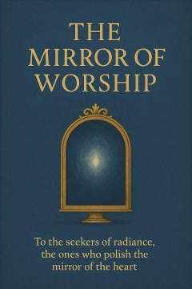

The Mirror of Worship
What we worship shapes us. The mirror isn’t out there—it’s in who we become when we bow.
“We do not merely worship what is great—we become what we treat as great.”
Worship is attention, affection, and allegiance pointed at what we call “most important.” Whether to God, glory, money, beauty, or self—worship trains the heart to resemble its object. In time, it becomes a mirror.
This reflection is not about arguing who deserves worship, but what worship does to a human being. It asks a simple, demanding question: If your life slowly imitates what you adore, what are you becoming?
Part I — What Is Worship?
Worship is not limited to rituals. It is daily orientation. What you think about first in the morning and last at night, what you cannot bear to lose, what defines success or failure for you—that is your altar.
In practice, worship is three movements:
Attention — where the mind rests.
Affection — what the heart delights in.
Allegiance — what the will serves when it costs.
The secret is simple: the object of worship becomes the template of the soul.
Part II — The Mirror Effect
We are impressionable. Fix your gaze on anger long enough, and your speech hardens. Fix it on mercy, and your hands open. Our inner life copies the patterns we repeatedly honor.
This is why worship is powerful: it is not just praise; it is formation. It bends habits, calibrates conscience, and rewires what we call “normal.”
You move toward what you magnify.
Healthy Worship Looks Like
• Truth over convenience, even when it corrects me.
• Humility that remembers I am not the center.
• Compassion that turns awe into service.
• Joy that does not require winning to be alive.
Unhealthy Worship Feels Like
• Idolatry: when good things demand ultimate loyalty.
• Fear: when loss of the idol feels like loss of self.
• Contempt: when outsiders become enemies, not neighbors.
Part III — The Practice
You don’t change by trying once—you change by training often. These simple practices polish the mirror.
1) Daily Aim: Name in one sentence what is “worthy” today. Keep it visible.
2) Honest Inventory: Ask, “What did I actually adore with my time, money, and attention?”
3) Awe to Action: Let admiration become a small act of service within 24 hours.
4) Silence and Breath: A minute of quiet re-centers the heart on what matters more than noise.
5) Community: Walk with people who love what you want to become.
Part IV — The Mirror of Worship
Stand before the mirror and ask:
• What am I becoming like?
• Who benefits from my devotion?
• Does my worship make me larger in love—or only larger in ego?
True worship does not shrink the world to “me and mine.” It enlarges the self until it can hold others without fear.
If worship leaves you proud, suspicious, and easily offended, the mirror is cracked. If it leaves you honest, grounded, and brave in kindness, the mirror is clear.
Reflection — A Short Litany
What I give my best to, I become.
What I look at long, I learn to love.
What I call “worthy,” I slowly wear.
May my worship make me more human, not less.
You do not have to force devotion. You can choose direction. Start small. Aim your attention toward what you would be proud to resemble in ten years. The mirror will do the rest.
Ninox Antolihao is a Filipino writer-restaurateur exploring the meeting point of science, spirit, and daily life. His reflections seek clear language, calm courage, and practical wonder.
Leave a message